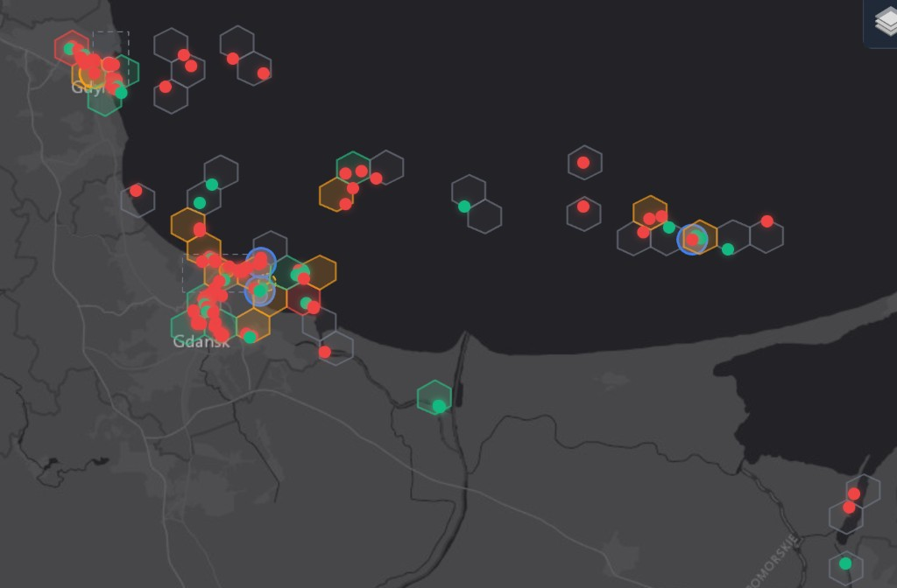
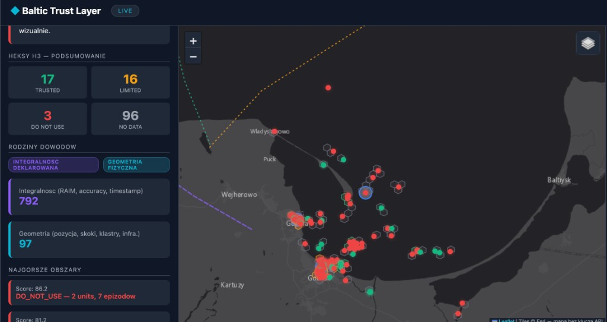
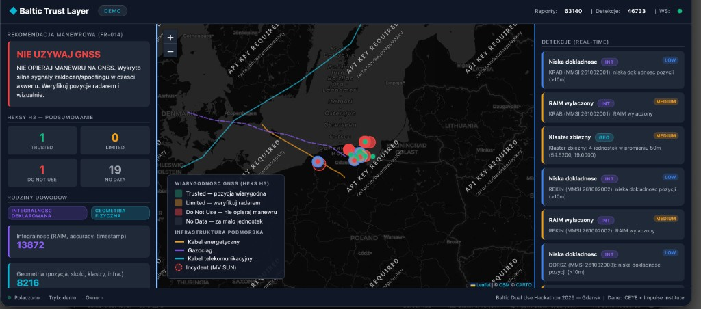

Warstwa wiarygodności GNSS. Zamiast mapy pozycji — jedna odpowiedź manewrowa:
czy w tym kwadracie mogę oprzeć manewr na GNSS?
Dual-use: to samo wyjście dla VTS / portu i dla operacji obronnej.
Statek widzi pozycję. Nie wie, czy jest prawdziwa. Epicentrum: Kaliningrad.
Wyłączanie AIS, fałszywe MMSI, cisza pozycyjna przy żywym transponderze.
Nord Stream, Balticconnector, Yi Peng 3, Eagle S, MV SUN przy SwePol Link.
Cykliczne manewry przy kablu w polskiej EEZ. Formalna reakcja po 6–8 dniach. Operatorzy dostają surowy AIS, nie rekomendację dla akwenu. My liczymy ją w oknie 15 minut.
To, co transponder sam mówi o GNSS: RAIM, dokładność pozycji, UTC (manual / dead reckoning / inoperative). Szum codzienny oddzielamy od sygnału — jeden czerwony statek nie maluje całego heksa.
Czy pozycja w ogóle jest możliwa: ląd poza portem, skok >60 kn, klaster ≥3 MMSI w 50 m, utrata pozycji, loitering przy kablu — wzorzec MV SUN.
Nowość: scoring per heks H3 (~5 km²) × 15 min, nie per jednostka. Brief całego rejonu = najgorszy heks. Cywilnie: „weryfikuj radarem”. Militarnie: „GNSS denial w kwadracie X” — ten sam produkt, dwa etykiety.

Zrzut live · południowy Bałtyk. Kolor heksa = TRUSTED / LIMITED / DO NOT USE / NO DATA. Kropka zielona/czerwona = ostatni raport jednostki (RAIM / accuracy / UTC) — to nie jest kolor heksa.

Live: 17 Trusted · 16 Limited · 3 Do Not Use · 96 No Data. Wiele czerwonych statków, mało czerwonych heksów — scoring nie myli jednostki z akwenem.

Demo: brief NIE UŻYWAJ GNSS + taśma detekcji (INT/GEO). Scenariusze: jamming, klaster spoofing, ląd, skok, MV SUN, shadow fleet.
Dojrzałość prototypu: FastAPI, silnik w Pythonie, dashboard bez buildu, trzy tryby źródła. Granica uczciwa: dowody idą z AIS — nie ma jeszcze radaru ani SAR. System mówi „niespójne”, nie „tu stoi wróg”.
VTS i porty (Gdańsk / Gdynia), operatorzy kabli i MFW, P&I / ubezpieczyciele, Marynarka i Straż Graniczna. Ten sam feed, inna etykieta.
Abonament za AOI i okno 15 min. API do VTS / C2 — nie wymieniamy ich systemu. Później warstwa SAR (logiczny partner: ICEYE) jako upsell potwierdzenia.
Dziś: otwarty AIS. Jutro: urzędowy strumień + GIS hydrograficzny, on-prem. Prototyp już liczy live. Nie czekamy na konstelację.
90 dni po hackathonie: oficjalne trasy kabli, filtr szumu INT, pilotaż na Zatoce, ścieżka on-prem. Ryzyko znane: sam AIS nie zamyka jednostki, która wyłącza cały transponder — to domyka dopiero radar / SAR.
Raport ICEYE × Impulse, incydenty (MV SUN, Eagle S), brief FR-014 zamiast listy alarmów.
AIS → heurystyki → H3 → score. Live WebSocket, trzy tryby źródła, deduplikacja epizodów.
Mapa, heksy, tooltip jednostki, taśma detekcji — jeden ekran dla dyżurnego.
Prosimy o pilotaż na Zatoce. Warstwa zaufania, nie kolejny tracker.
Kliknij imię i wpisz przed wyjściem na scenę. Strzałki / spacja — slajdy. N — notatki. T — stoper 3:00.